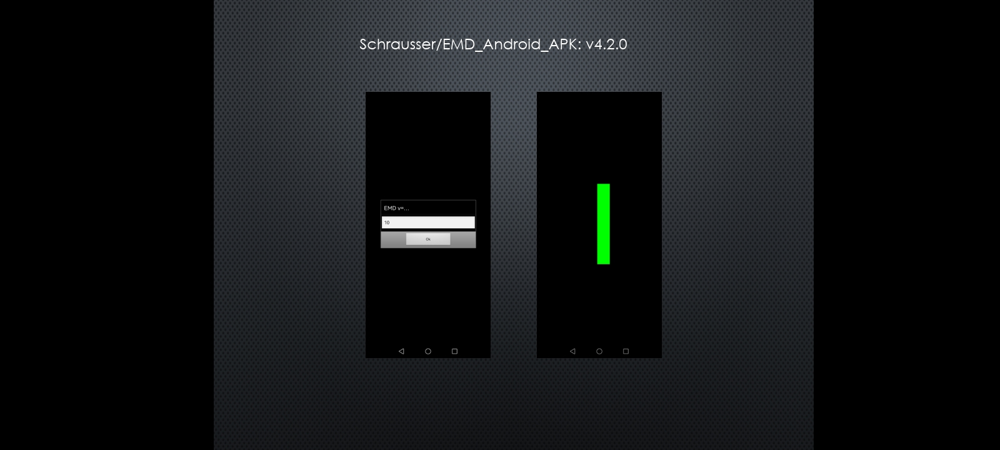
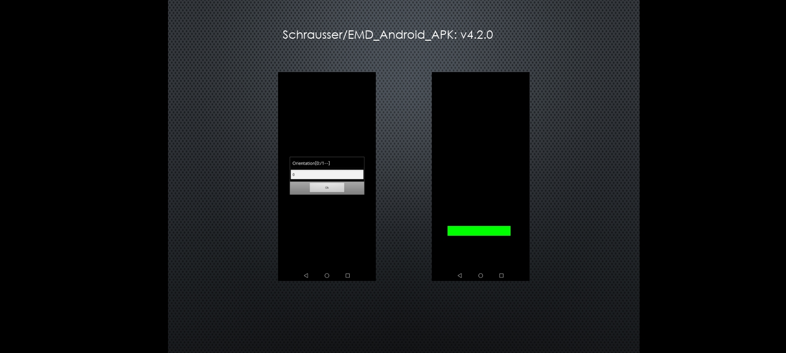

Android application to simulate parts of EMDR procedure implemented by Schrausser et al. (1994, 2022, respectively). Android versions 4.0 or later (c.f. Schrausser, 2023a, b).
emd.basstrg.inc, sigma.inc



Schrausser, D. G. (2023a). Schrausser/EMD_Android_APK: v4.5 (v4.5.7). Zenodo. https://doi.org/10.5281/zenodo.7644237
———. (2023b). EMDA: Treatment procedure for lateral Eye Movement Desensitization. PsyArXiv. https://doi.org/10.31234/osf.io/n2r5z
Schrausser, D. G., Draxler, J., & Plechinger, J. (1994). EMD - Eye Movement Desensitization. Manuskript. Institut für Psychologie, Karl Franzens Universität, Graz, Austria. http://doi.org/10.13140/RG.2.2.28498.02247/2
———. (2022). EMD - Eye Movement Desensitization. Manuscript. (English translation). Institute of Psychology, Karl Franzens University, Graz, Austria. http://doi.org/10.13140/RG.2.2.13968.38404
EMD_Android_APK
Dietmar Gerald Schrausser21.07.2025